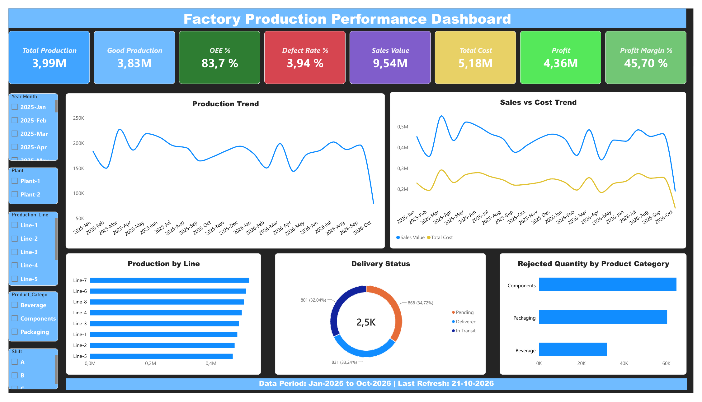

How efficient is our factory production?
I analysed 2,500 production records from two plants (Jan 2025 to Oct 2026) in Power BI to track output, quality, cost and profit, and built an interactive dashboard from the results.
Final dashboard
Final Factory Production Performance Dashboard (screenshot of the interactive Power BI version). The slicers filter by year-month, plant, production line, product category and shift.

The challenge
A factory manager needs one clear view of production: how much is made, how much is defective, how efficient the machines are, and whether the business is profitable, so problems can be found and fixed quickly.
The data
An Excel file with 2,500 production records and 30 columns: date, shift, plant, production line, product category, planned / produced / good / rejected quantity, downtime, runtime, material / labor / overhead cost, sales value, defect rate, OEE, inventory, customer, region and delivery status. The results I measured are OEE %, Defect Rate % and Profit.
What I did in Power BI
- Loaded and cleaned the data: Imported the Excel sheet, checked for missing values and set the correct data types.
- Created a Year-Month field: From the date column, to show trends from 2025-Jan to 2026-Oct.
- Wrote DAX measures:
- Total Production, Good Production and Rejected Quantity.
- OEE % and Defect Rate %.
- Sales Value, Total Cost, Profit and Profit Margin %.
- Designed the dashboard: With 8 KPI cards, 5 charts and 5 slicers so anyone can filter the results.
Behind the dashboard: visuals
- Production Trend: line chart of output by month.
- Sales vs Cost Trend: line chart comparing revenue and cost over time.
- Production by Line: bar chart ranking the 8 production lines.
- Delivery Status: donut chart of Pending, Delivered and In Transit orders.
- Rejected Quantity by Product Category: bar chart to find where quality problems are.
Key findings
- Total production was 3.99M units, of which 3.83M were good, a defect rate of 3.94%.
- Overall equipment effectiveness (OEE) was 83.7%.
- Sales value was 9.54M against a cost of 5.18M, giving 4.36M profit and a 45.7% margin.
- Components have the most rejected units (about 65K), followed by Packaging (60K). Beverage is lowest at 32K.
- Line-7 produces the most and Line-5 the least, but the 8 lines are fairly close.
- Delivery is split almost evenly: Pending 34.7%, Delivered 33.2% and In Transit 32.0%. Only a third of orders are delivered.
- Sales and cost move together month to month, and both drop sharply in the last month (Oct 2026), which is probably an incomplete month.
Recommendation
Focus quality checks on Components and Packaging, where most rejects happen. Speed up delivery to reduce the share of pending orders, and keep monitoring OEE by line and shift to push it above 83.7%.
Tools used
Power BI Desktop, DAX, KPI design, Excel, Dashboard design.